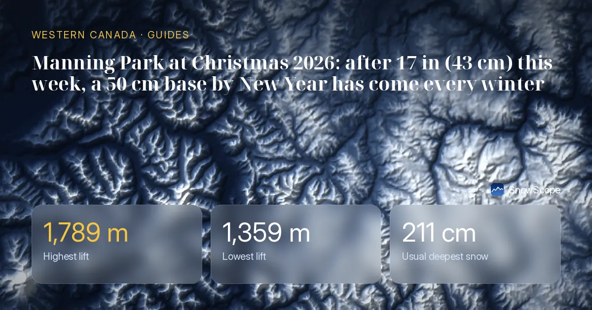
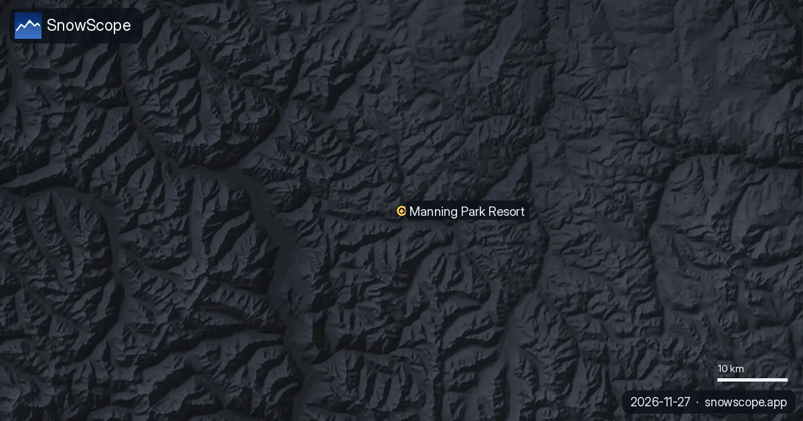
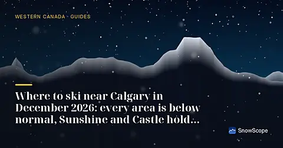

Manning Park at Christmas 2026: after 17 in (43 cm) this week, a 50 cm base by New Year has come every winter
Manning Park is a safe Christmas choice: in every one of 46 winters on our record the hill had more than 50 cm (20 in) of snow at 5,164 ft (1,574 m) by New Year, and a usual December 25 brings 45 in (115 cm). This week's storm left 17 in (43 cm) in three days, and the upper slopes now hold 22 in (57 cm).
See the live snow forecast for Manning Park Resort in the SnowScope appSnow depth, powder alerts and the 3D map, free.

The storm this week
Thursday brought 12 in (31 cm) and Wednesday 3 in (8 cm), part of the same Pacific system that buried the Coast Mountains. Manning sits just over the crest of the Cascades, so it gets both coastal storms and drier Interior cold, which is a good mix for early-season snow.
Even so, the mid-mountain base of 11 in (28 cm) is below the 27 in (69 cm) that is usual for late November. Another 3 in (7 cm) is forecast by Monday.
Christmas in numbers
At 5,164 ft (1,574 m) the usual depth is 36 in (92 cm) on December 8, 39 in (100 cm) on December 15 and 45 in (115 cm) on Christmas Day; on January 1 it is 4 ft (123 cm). One Christmas in four has less than 37 in (93 cm), one in four more than 4.5 ft (138 cm).
By mid-December a 50 cm base was already there in 98% of winters. The leanest year, 2000-01, still peaked at 4.4 ft (134 cm); the biggest, 1998-99, at 10.1 ft (309 cm).
Why Manning works for a family holiday
Manning Park is a small, affordable ski hill inside a provincial park, with a lodge, cabins and a lot of space for snowshoeing, skating and cross-country skiing on groomed trails. For families from the Lower Mainland it is the nearest proper winter without the price of Whistler.
The lifts climb from 4,459 ft (1,359 m) to 5,869 ft (1,789 m), with mostly intermediate runs. The snow quality is often better than at the coast hills, because the air is colder on the east side of the crest.
Cross-country skiing
Manning's Nordic trails are among the best in southern BC and often open before the downhill runs, because they need less base. In a year with an early storm like this, they are a good reason to come in early December.
Planning the trip
Manning is about three hours from Vancouver on Highway 3 through Hope. The Hope-Princeton highway climbs over Allison Pass and can be snowy and icy; winter tires are required, and chains are wise during storms.
Lodge and cabin rooms for the holidays are limited. Book soon and follow the Manning Park snow page for the base, mid-mountain and top numbers.
Compared with the coast hills
Cypress, Grouse and Seymour, the Vancouver local mountains, sit lower and closer to the ocean, and their early-season snow comes and goes with each warm front. Manning, inland and higher, holds its snow better and has drier snow on most days.
The price of that is the drive. For a weekend or a holiday week, though, the gain in snow reliability is real: a 50 cm base by mid-December in 98% of winters is a number the coast hills cannot match.
Quick answers
Is it cold over Christmas? Usually: the park sits high, and holiday mornings at the lodge are often well below freezing.
Is it busy? Much less than the coast hills; weekends after Christmas are the busiest days.
How deep does it get later? The snow is usually deepest in March, near 5.9 ft (181 cm) at mid-mountain.
Tips for skiers
- Book the lodge or cabins now for Christmas week; there are few beds in the park.
- Bring cross-country skis if you have them: the Nordic trails are a highlight.
- Drive Highway 3 in daylight in December and check the road report first.
- Compare with other BC hills on the Western Canada snow hub.
About these numbers
Snow numbers: SnowScope's snow map and forecast for today, and our record of 46 past winters at each resort (an estimate for the area, not the resort's own report).
Official avalanche bulletins: Avalanche Canada
Cite this report
For research, teaching or the press: the numbers and charts are free to reuse under CC BY 4.0 with this citation.
SnowScope (2026), Manning Park at Christmas 2026: after 17 in (43 cm) this week, a 50 cm base by New Year has come every winter, https://snowscope.app/blog/en/2026/11/manning-park-resort-christmas-2026-snow-odds-closest-ski-to-vancouver-interior.html, accessed 2026-11-27
SnowScope (Atlas Labs). (2026, November 27). Manning Park at Christmas 2026: after 17 in (43 cm) this week, a 50 cm base by New Year has come every winter. SnowScope snow reports. https://snowscope.app/blog/en/2026/11/manning-park-resort-christmas-2026-snow-odds-closest-ski-to-vancouver-interior.html
BibTeX
@misc{snowscope2026manningparkresortchristm,
author = {{SnowScope (Atlas Labs)}},
title = {Manning Park at Christmas 2026: after 17 in (43 cm) this week, a 50 cm base by New Year has come every winter},
year = {2026},
month = nov,
howpublished = {\url{https://snowscope.app/blog/en/2026/11/manning-park-resort-christmas-2026-snow-odds-closest-ski-to-vancouver-interior.html}},
note = {Published 2026-11-27 21:36 UTC; accessed 2026-11-27}
}· CC BY 4.0 · Methods, data and tools →
Manning Park Resort: snow and temperature by height, this winter vs last (tools) →
Follow Manning Park Resort
Free: a message when fresh snow is coming, and the forecast every morning.
More snow reports

Banff Sunshine, Lake Louise, Norquay, Nakiska and Castle Mountain compared for a December day trip from Calgary: snow today, how far behind normal, and what December usually adds.

Three top Western Canada resorts for the weekend: Manning Park Resort leads with 101 cm, plus fresh snow forecast. Data from 11 November.

Whistler Blackcomb's upper slopes hold 8.7 ft (266 cm) after a 4.6 ft (141 cm) three-day storm. What 46 winters say about Christmas, and why the valley is the only question.